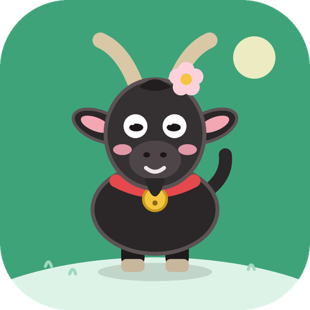

존중목장
서로를 존중하는 생활 공동체
⚠️ 지금은 설치할 수 없는 화면이에요
카카오톡·네이버 같은 앱 안의 브라우저에서는 설치가 되지 않아요. 크롬으로 열어서 설치해 주세요.⚠️ 미리보기 화면이에요
claude.ai 미리보기에서는 앱 설치가 되지 않아요. 선생님께 받은 존중목장 앱 주소를 휴대폰 크롬에서 열어 설치해 주세요.바탕화면에 설치하는 방법
- 크롬 오른쪽 위 ⋮ 메뉴를 누르세요
- 앱 설치 또는 홈 화면에 추가 → 설치를 누르세요
- 바탕화면에 생긴 🐐 존중목장 아이콘을 누르면 끝!
‘바로가기 만들기’가 아니라 설치를 골라야 진짜 앱처럼 열려요.
아이폰에 설치하는 방법
- 사파리로 이 주소를 여세요
- 아래쪽 공유 버튼(□↑)을 누르세요
- 홈 화면에 추가 → 추가를 누르세요
✅ 앱으로 실행 중이에요
처음 열 때 claude.ai 로그인이 필요할 수 있어요. 휴대폰 크롬에서 claude.ai에 로그인해 두면 다음부터 바로 열립니다.존중목장 앱 v4 · 흑염소